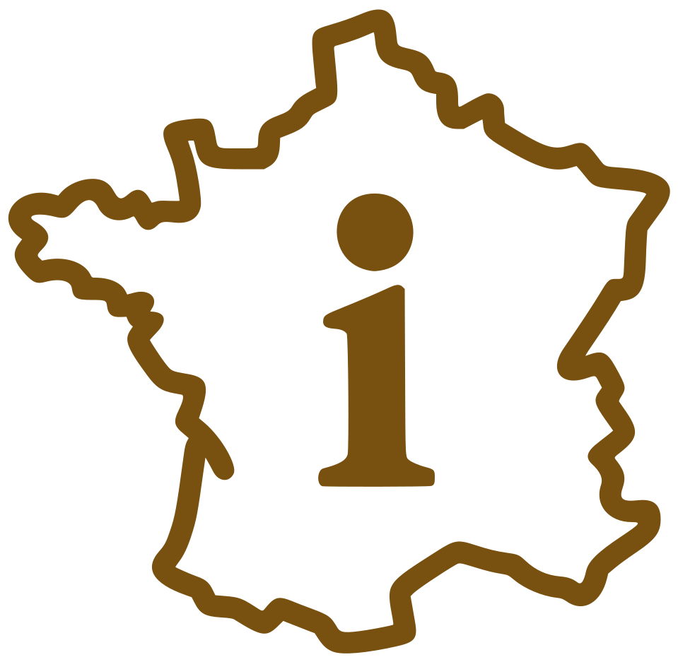

De app is niet volledig geladen. Controleer je verbinding en ververs de pagina. Blijft dit staan, dan is er iets mis aan onze kant en horen we het graag op nederlanders.fr.
Je hoeft de app niet af te sluiten: ga gewoon terug naar je beginscherm, de app wacht rustig op de achtergrond. Wil je hem toch echt afsluiten, veeg dan op een iPhone omhoog en houd even vast, en veeg de kaart van InfoPoche omhoog. Op Android open je de recente apps en veeg je InfoPoche weg.
Je bent offline. Je ziet de laatst bekende stand.
De modulecatalogus kon niet worden geladen. Controleer je verbinding en laad de pagina opnieuw.
{{ begroetingTekst }}
{{ vdKop }}{{ vdNaamdag }}
{{ vdMaanNaam }}
Prototype
InfoPoche is nog een prototype. Je bent van harte welkom om je feedback, verbetervoorstellen en suggesties met ons te delen.
Het dossier kon niet geladen wordenDe hoofdstukken staan hieronder met hun nummer. Probeer het opnieuw of lees het dossier op Infofrankrijk.Het dossier op Infofrankrijk ↗
De fasen
{{ gzToolsTitel }}
{{ gzLijstTitel }}
{{ gzLijstMeta }}
{{ strookTitel }}
Hier staat alleen wat echt AI gebruikt. Een AI kan fouten maken: controleer belangrijke zaken in de bron of bij een deskundige.
{{ g.naam }}
{{ g.wat }}
Er staan nu geen AI-tools aan.
{{ aiUitTekst }}
Voorbeeld laden…
Voorbeeld kon niet geladen worden
VOORBEELD
{{ dsTitel }}
{{ dsOndertitel }}
{{ dsWelkom }}
Eerstvolgende termijn
{{ dsEerstTitel }}
{{ dsEerstDatum }}
Onderdelen
{{ dsOndNaam }}
{{ dsOndWat }}
{{ p.titel }}{{ p.status }}
{{ p.tekst }}
Documenten bij {{ dsOndNaam }}
{{ d.titel }}{{ d.datum }}
Termijnen bij {{ dsOndNaam }}
{{ t.titel }}{{ t.datum }} · {{ t.stand }}
{{ o.tekst }}
{{ d.titel }}{{ d.onderdeel }} · {{ d.datum }}
In het voorbeeld niet beschikbaar
{{ t.titel }}{{ t.stand }}
{{ t.datum }} · {{ t.onderdeel }}
{{ t.toelichting }}
{{ n.titel }}{{ n.datum }}
{{ n.tekst }}
In het voorbeeld niet beschikbaar
⌕
{{ resultCount }}
Artikelen op Infofrankrijk
Zoeken op Infofrankrijk…
Zoeken in de artikelen van Infofrankrijk lukt nu niet. De resultaten van de app zelf staan hierboven.
Geen artikelen gevonden op Infofrankrijk.
{{ resultCountTaal }}
Eén zoekveld voor de hele app
Typ minstens twee tekens. Je zoekt in modules en tools, artikelen van de site en berichten op het forum, alles in één lijst met een label erbij.
Voor wie alleen woont en merkt dat het minder gaat. Eerst wat nú moet, dan de aanvragen, en pas daarna het geld en het wonen.
{{ k.kop }}
{{ k.tekst }}
{{ zoSectieWat }}
{{ l.n }}{{ l.tekst }}
{{ p.kop }}
{{ p.tekst }}
{{ p.bron }}STAND VAN ZAKEN
{{ zoTabelKop }}
{{ r.gir }}{{ r.wat }}{{ r.bedrag }}
{{ k.veld }}{{ k.hint }}
Zeggen wat je nodig heeft
{{ z.fr }}
{{ z.nl }}
Waar dit vandaan komt
{{ b.wat }}
{{ b.welke }}
{{ zoVoorbehoud }} {{ toolNagekeken }}
Wonen · vrij toegankelijk
Een huis kopen
Kies de fase waarin je zit. Per fase staat wat er wettelijk geldt en wat alleen gebruik is. Dat onderscheid is precies waar het misgaat.
{{ k.kop }}
{{ k.tekst }}
{{ vgFaseWat }}
{{ p.kop }}
{{ p.tekst }}
{{ p.bron }}NOG NIET GECONTROLEERD
Doen en vermijden
{{ d.n }}
✓{{ d.doen }}
×{{ d.niet }}
Gereedschap bij deze fase
{{ g.naam }}
{{ g.wat }}
{{ g.bron }}
{{ g.let }}
Wat gaat het je kosten
De rekentool Vastgoed transactiekosten rekent met de overdrachtsbelasting van jouw departement en het wettelijke notaristarief, en toont per post het toegepaste wetsartikel met bron en peildatum.
Valkuilen die in geen enkele fase thuishoren
{{ v.kop }}
{{ v.tekst }}
Waar dit vandaan komt
{{ b.wat }}
{{ b.welke }}
{{ vgVoorbehoud }} {{ toolNagekeken }}
Wonen · rekenmotor
Energie & verwarming
{{ enOver }}
Rekenmotor laden…
De rekenmotor (engine/) kon niet worden geladen. Geen uitkomst te tonen. Probeer het later opnieuw.
Voorbeeldhuis, vrij te bekijken
{{ enVbTitel }}
{{ enVbLetter }}
DPE
Jaarkosten
{{ enVbKostenJaar }}
{{ enVbKostenMaand }} per maand
{{ r.k }}{{ r.v }}
{{ u.k }}{{ u.v }}
De forfaits per bouwperiode komen uit de methode 3CL-DPE 2021 (arrêté 31-03-2021). Deze doorrekening gaat uit van een gewone apparatenmix en geen zwembad, laadpaal of zonnepanelen.
{{ enVbMismatchTekst }}
Nu je eigen situatie
Acht vragen, met dezelfde rekenmotor als hierboven. Gratis in te vullen, met je eigen bedragen als uitkomst.
{{ g.n }}
{{ g.label }}
{{ g.hint }}
8
Woonoppervlak
Surface habitable, zoals op je acte of taxe foncière.
Je hoeft de app niet af te sluiten: ga gewoon terug naar je beginscherm, de app wacht rustig op de achtergrond. Wil je hem toch echt afsluiten, veeg dan op een iPhone omhoog en houd even vast, en veeg de kaart van InfoPoche omhoog. Op Android open je de recente apps en veeg je InfoPoche weg.
Versie van InfoPoche
{{ versieRegel }}
Updates gaan vanzelf. Deze knop laadt InfoPoche opnieuw, voor als de app lang op de achtergrond openstond.
{{ artTitel }}
{{ artMeta }}
Artikel laden…
Dit artikel kon niet in de app worden geladenMogelijk is de verbinding weg of is Infofrankrijk tijdelijk niet bereikbaar. Het artikel zelf staat gewoon op de site.Op infofrankrijk.com ↗
Dit artikel kon hier niet getoond wordenInfofrankrijk vraagt om in te loggen voor dit artikel, en de app kan dat niet. Je leest het artikel wel op de site zelf.Lees het op infofrankrijk.com ↗
Zoek op postcode welke zaken de Franse overheid recent heeft gecontroleerd op hygiëne, en wat de uitkomst was. Het gaat om zaken waar je zelf eet of koopt: restaurants, kantines, bakkers, slagers, traiteurs en winkels.
{{ hyGeoMelding }}
{{ hyTelling }}
Controles worden opgehaald...
De gegevens zijn nu niet te laden. Controleer je verbinding of probeer het later opnieuw.
Bron: Alim'confiance van het Franse Ministerie van Landbouw (Licence Ouverte). Dit zijn gegevens van de overheid: de uitkomst is die van de inspecteur op de controledatum, InfoPoche beoordeelt niets. Je locatie wordt alleen gebruikt als je op de knop tikt, eenmalig om een postcode te vinden (via geo.api.gouv.fr of, als die niet antwoordt, de Géoplateforme data.geopf.fr), en wordt niet bewaard.
Wat de Franse overheid openbaar publiceert over je gemeente en je adres: risico's, belasting, de mairie en meer. Elke kaart noemt zijn bron. Valt een bron uit, dan staat dat erbij.
{{ gmGeoMelding }}
Vul een postcode of een adres in (minstens 4 tekens).
Dit zijn gegevens van de Franse overheid per gemeente, zonder oordeel van InfoPoche. Een ingevuld adres gaat naar de Franse adreszoeker (data.geopf.fr) en daarna naar Géorisques. Natuurrampbesluiten, radon en verkochte huizen vraagt de app op via de server van Infopoche; die ziet alleen de gemeentecode en slaat niets op (de hostingdienst bewaart technische logbestanden). Je locatie wordt alleen gebruikt als je op de knop tikt, eenmalig om een gemeente te vinden (via geo.api.gouv.fr of de Géoplateforme data.geopf.fr) en de risico's op die plek op te vragen. Niets wordt bewaard.

Over InfoPoche
Ons netwerk in je broekzak
Wie zijn we
Infofrankrijk.com
Kennishub, sinds 2001.
Nederlanders.fr
Het forum, sinds 2002, met ruim 25.000 leden. Het bestaat dankzij de mensen die eraan bijdragen: vragenstellers, bijdragers en discussiedeelnemers, soms honderden bijdragen per persoon over vele jaren. Het is een gemodereerde gemeenschap, met toelating, huisregels en optreden tegen spam en misbruik.
Café Claude
Je klikt je vraag aan en krijgt een kort, duidelijk antwoord. Daaronder staat de volledige onderbouwing: de uitgebreide analyse waarop dat antwoord rust. Je krijgt dus niet alleen het antwoord, maar ook hoe we eraan komen.
Nedergids
Vind particulieren en dienstverleners in Frankrijk.
Hoe wij naar kennis kijken
Onderaan staan data en zoek-agents. Daarboven kennis: een gevalideerd antwoord op een gestelde vraag. Bovenaan, het grootst, staat ervaring, want één melding is een anekdote en twintig meldingen zijn een patroon. In de punt de handeling zelf: uitwisseling.
Peil
Ons register van financiële parameters en berekeningsgrondslagen voor Nederland en Frankrijk, waarmee de tools en Café Claude rekenen. Elk met bron en datum van controle.
Toezicht op de techniek: werkt elke tool, zijn de koppelingen en API's in orde, zijn er storingen. Cockpit signaleert voordat iets breekt: verloopdata, sleutels en koppelingen, met diagnose en herstelroute.
Peil bewaakt de integriteit van de data. Dat is een continu proces van updaten en controleren, niet alleen van de parameters maar ook van de berekeningsgrondslagen.
Officiële bronnen wegen zwaar. Facebook telt niet als bron.
Kansen en valkuilen
Kansen
AI helpt om te zoeken en formuleren. Het maakt een vraag sneller beantwoordbaar. Nauwgezette protocollen, geautoriseerde bronnen en betrouwbare API's (koppelingen) met bronnen van officiële instanties helpen ons om de inzet van AI in onze media nauwgezet te auditen.
Valkuilen
Een valkuil is een verkeerde veronderstelling van een AI-agent of tool, waardoor het hele antwoord onjuist is. De oorzaak is bijna altijd dat de context onvoldoende duidelijk was.
Voorbeeld: je stelt een vraag in het Nederlands over de Franse inkomstenbelasting, en de AI antwoordt met Nederlandse regels.
Een vraag stellen aan een AI-tool zonder context is een recept voor mogelijk onjuiste informatie. Daarom vraagt de app je postcode: die legt de context vooraf vast.
Waarom dit zorgvuld moet
Als ChatGPT, Claude enz. iets fout doen wordt het afgedaan als 'typisch AI'; als een van onze tools niet werkt komt het met de onversneden directheid van de Nederlandse cultuur direct terug in het forum.
Na anderhalf jaar werk aan betrouwbare AI weten we: een fout antwoord klinkt even overtuigend als een goed. Controles verkleinen risico's, maar garanderen niets.
Het abonnement op Infofrankrijk houdt de kennisbank en het forum in stand.
De app geeft algemene voorlichting, geen juridisch of fiscaal advies. Bij een concrete zaak: notaris, expert-comptable of de betreffende dienst. Een forumreactie, AI-antwoord of rekentool vervangt niet automatisch professioneel advies voor je specifieke situatie.
Voorbeeld. Dossier Frankrijk is er voor abonnees van Infofrankrijk. Je houdt altijd en onbeperkt toegang tot je dossier, ook als je abonnement niet verlengd wordt; alleen de dossierassistent stopt dan.
Tekst gekopieerd. Open Nederlanders.fr, maak een nieuw bericht en plak de tekst. Je moet daarvoor aangemeld zijn op Nederlanders.fr.
Kopiëren lukte niet op dit toestel. Selecteer de tekst hieronder en kopieer hem zelf. Open daarna Nederlanders.fr, maak een nieuw bericht en plak de tekst. Je moet daarvoor aangemeld zijn op Nederlanders.fr.
Wat je net gebruikte is gratis. Dat kan, omdat abonnees van Infofrankrijk de bekostiging en instandhouding mogelijk maken.
Met een abonnement help je ook de toekomst van het forum Nederlanders.fr veilig te stellen, de plek waar Nederlanders en Vlamingen in Frankrijk elkaar al jaren verder helpen.